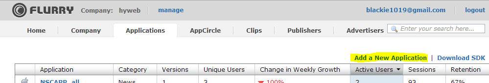
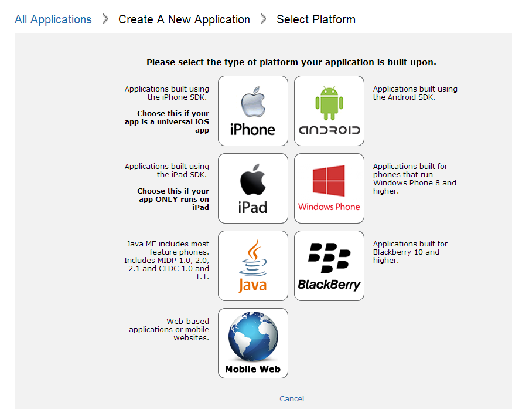
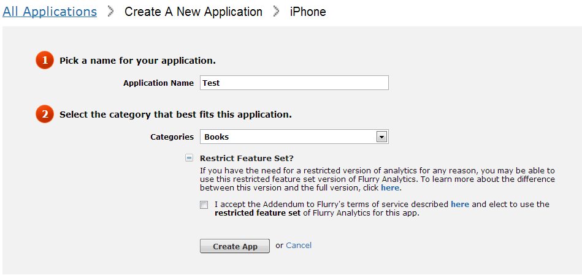
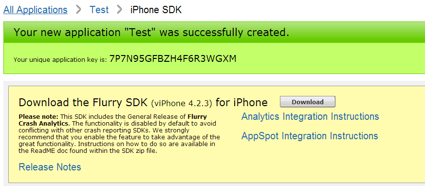
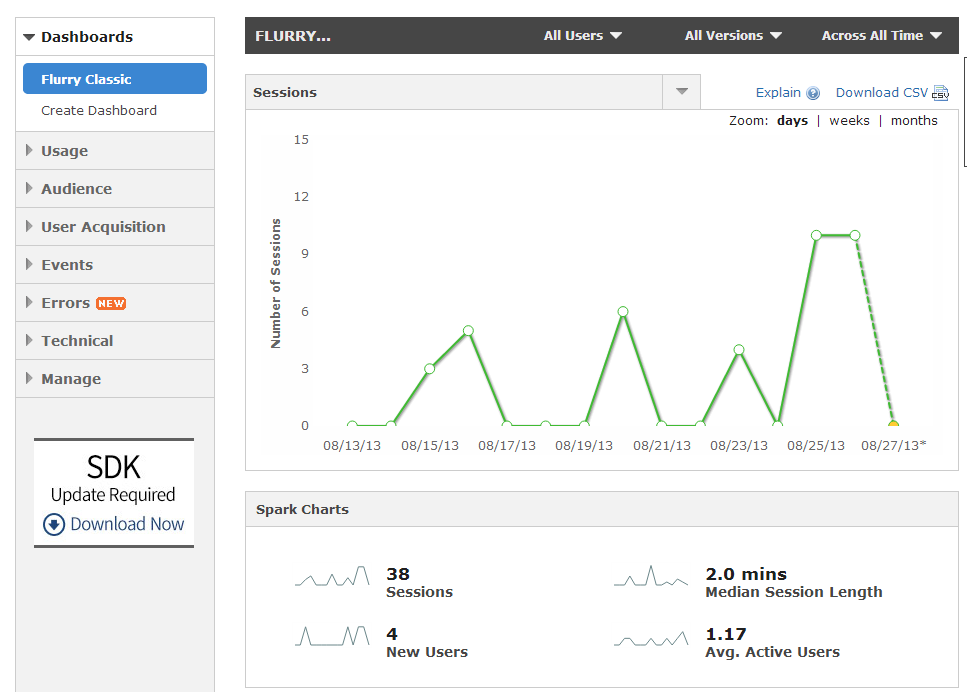
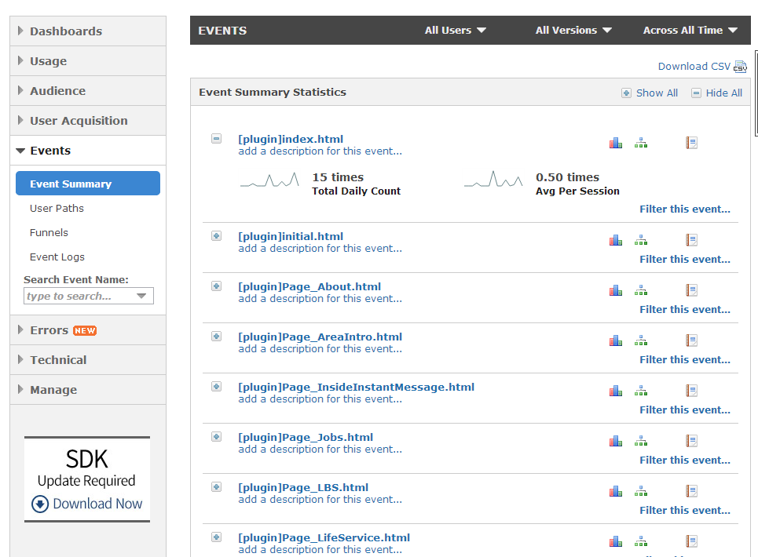
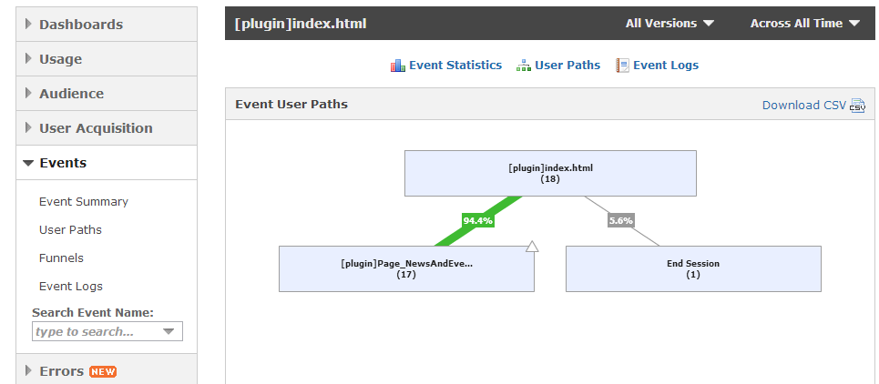

關於Flurry在iOS上面的設定
App 的世界：App 正在吞噬這個世界
Web 的世界：Web 已死？
開頭是一個很聳動的標題，但這的確是這幾年的趨勢，但不代表Web就要被淘汰，而是用其他延伸的開發架構轉化到不同使用方式，可以開發APP(web/hybrid app架構)或是做為server端語法(nodeJS),甚至可以做成embeded system(有興趣的可以參考Mandice)。這年頭要明確地掌握手中資源才可以做到最有效的利用，所以不管在哪一個平台或方式都要盡量收集使用者資訊，透過分析使用者行為的方式來改善或是藉此看到商機。
而這邊指的Web我把它視為指前端開發，因工作上還是hybrid app架構為主，所以環境還是以Phonegap+JQM為主要，這邊就來直接帶大家一步步的透過第三方的plugin在Phonegap上也快樂的使用Flurry這套收集工具的威力。
先列出所有要下載的東西很簡單只有兩項
Flurry的註冊跟操作比較複雜，這邊以iOS一步步的教學如下
Flurry Setup on iOS
- 至Flurry註冊會員並登入會員
- 點到Applications後點選右方的Add a New Application
 - 這邊選擇你要加入的開發類型是哪一種，這邊我們選擇左上方的iPhone
 - 接下來設定你的Application名稱與類型，下方有一個Restrict Feature Set的選項，如果勾選的話你會獲取到較少的使用者資料，與一般收集版本的差異請看此處。
 - 這邊如果你建立成功的話會產一組key，這組key就是專門來讓你放在程式裡面識別要記錄成哪一個Application的識別值，之後我們會把他放到你APP當中。
- 然後我們打開我們已經建立的iOS Phonegap專案(我這邊用的是2.5版本但目前到最新的2.9也是相容的)，將剛剛從官方SDK下載下來的Flurry.h跟libFlurry.a檔案放置你的專案內，位置在Classes下方

- 接者我們再把從plugin下載的iOS folder下的FlurryPhoneGapPlugin.h跟FlurryPhoneGapPlugin.m放到
Plugin下
- 然後再把 flurryPlugin.js放入www下任意位置(這邊放在www/js/ios/flurryPlugin.js)
最後會成這樣的配置，如圖

接下來我們要在config.xml(舊版Phonegap是Cordova.plist)內新增一組key-value對應值
<plugin name="flurryPlugin"value="FlurryPhoneGapPlugin" />
如下圖
- 最後我們只要再有要用到的html頁面加入剛剛的js位置並且使用下面的方式就可以使用了
1 | <script type="text/javascript"src="js/ios/flurryPlugin.js"></script><!--此段記得要放在cordova.js之後--> |
所有可以用function可以參考js裡面有實作的，如果有沒有的也可以自己實作再回饋到github歐(與你分享的快樂勝過獨自擁有~!)
Flurry比較麻煩的地方就是蒐集到的資料呈現在網站上大概要等6-12小時左右，所以一定不能即時回饋的。
在等待一陣子後返回剛剛的Flurry網站在Application的地方就可以看到妳剛剛的資料

在左邊選單選到Events就可以看到我們設定的事件

這邊如果點選每個事件右邊的user paths還能看到每個event之間的互動情形

Flurry真的很棒，他可以幫你產生的數據直接產生報告，你可以從中做仔細分析使用者的行為以及偵錯一些exception的發生情形與統計使用者與硬體的情況…等等，應用面真的很廣，這邊希望大家都能透過這個工作做一個賺錢的app~!
如果你是要開發iOS7 APP的人請注意，這邊一定要用最新的Flurry SDK不然會有一定機率當機